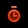

Gametypes
ETQW comes with three gametypes: Objective, Stopwatch, and Campaign.
Objective
In Objective mode, the opposing team must complete all the objectives in a map within the timelimit, and the defending team must prevent them from doing so. When the game ends, all player’s XP and proficiencies are reset.
Campaign
Campaign mode plays much like Objective, however 3 maps are stringed together, allowing players to accumulate XP and proficiencies over each map. When the campaign ends, all player’s XP and proficiencies are reset.
Stopwatch
Stopwatch plays like Objective mode, however when the first map ends, the teams are switched and the new opposing team must complete all objectives in less time than the other team did during the first round. All XP and proficiencies are reset at the end of each round.